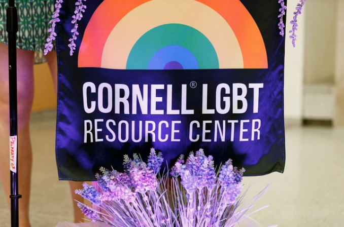
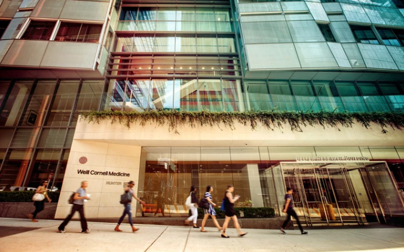
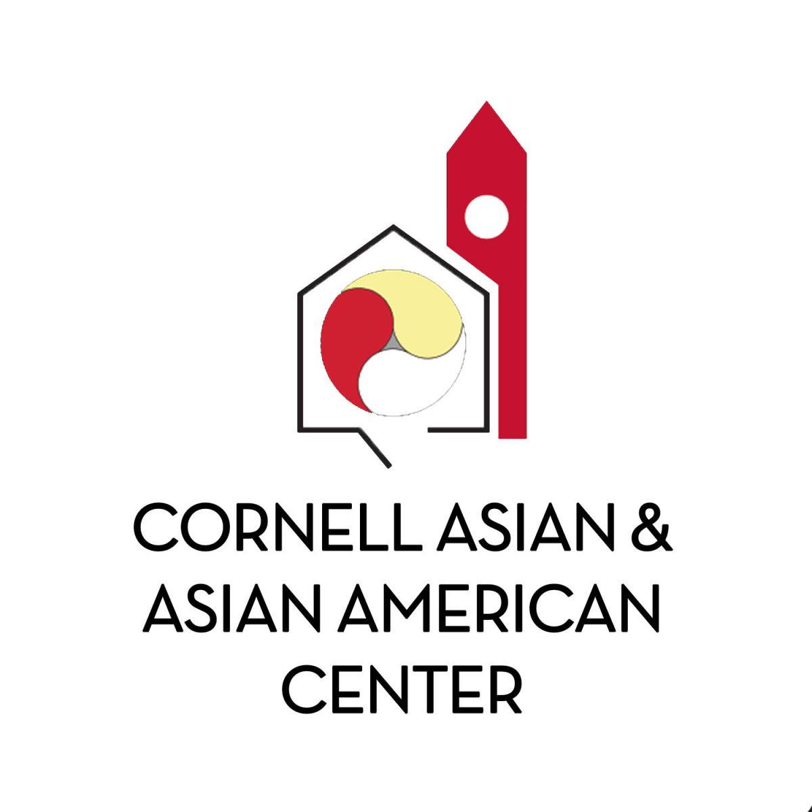
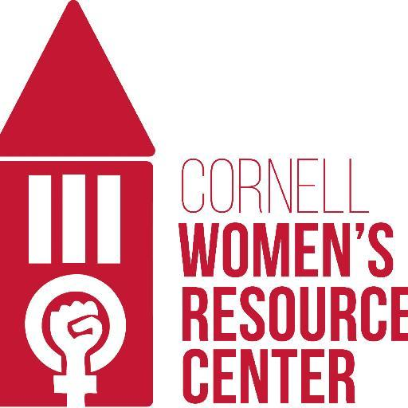
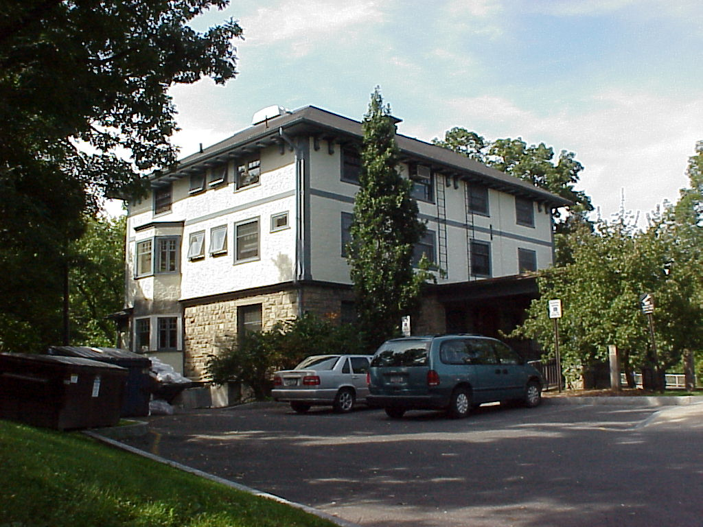
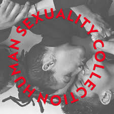

Resources
Cornell Health
Health and Wellness
Image SourceCornell Health provides integrated health care services to Cornell University students.
LGBT Resource Center
Academic and Administrative
 Image SourceThe Lesbian, Gay, Bisexual, Transgender (LGBT) Resource Center coordinates the efforts of the entire Cornell community to ensure the inclusion of all lesbian, gay, bisexual, transgender, queer, questioning, intersex, and asexual (LGBTQQIA) individuals and works to eliminate discrimination based upon sexual orientation, gender identity or expression. The LGBT Resource Center affirms LGBTQQIA+ identities and lives, and provides education, outreach, advocacy, and support.
Weill Cornell Medical College LGBT Support
Academic and Administrative
 Image SourceWe welcome members and participants at our monthly open committee meetings and maintain an active roster of events at the medical center in New York. For more information, please feel free to contact us at: lgbt-info@med.cornell.edu.
Asian and Asian American Center (A3C)
Academic and Administrative
 Image SourceThe Asian & Asian American Center, founded in 2009, offers programs for you to explore your racial, ethnic, and cultural identity in a positive space, as well as help educate the campus on the rich diversity of our community. Our community here is rich and diverse -you are encouraged to explore the 75+ Asian-affiliated organizations.
Women's Resource Center (WRC)
Academic and Administrative
 Image Source{kind=link}
The WRC is dedicated to serving the entire Cornell community with mutual respect, honesty, and openness. The WRC values people of all genders coming together to end sexism, along with all forms of oppression and maintaining an environment where all are free to affirm and celebrate their differences and commonalties.
Cornell Career Services: LGBT Career Resources
Academic and Administrative
Provides support and resources for navigating LGBT concerns in the workplace. The Career Services site provides links to LGBT friendly job posting sites, scholarships, and other related information. If you would like more information or to connect with a career adviser, please call (607) 255-5221.
Center for Intercultural Dialogue
Academic and Administrative
 Image SourceThe Center for Intercultural Dialogue at 626 Thurston Avenue promotes programs that cross the boundaries in Cornell's diverse student community, bringing together students from themed program houses, diversity and social justice-related student organizations, and other cultural centers across campus.
Human Sexuality Collection
Academic and Administrative
 Image SourceThe Human Sexuality Collection seeks to preserve and make accessible primary sources that document historical shifts in the social construction of sexuality, with a focus on U.S. lesbian and gay history and the politics of pornography.
Cornell Caring Community
Health and Wellness
Provides a variety of Cornell related support resources.
Advocacy for LGBT Communities Clinic
Academic and Administrative
The Advocacy for LGBT Communities Clinic (LGBT Clinic) at Cornell Law School is one of the only law school clinics in the country dedicated to serving members of the LGBT community. Students in the clinic have an extraordinary opportunity to contribute to the struggle for LGBT equality by representing individual people in a variety of legal matters and undertaking advocacy projects in conjunction with LGBT organizations. If you would like more information or to request assistance, please call our office at (607) 255-4196 or email lgbt-clinic@cornell.edu.
Office of Academic Diversity Initiatives (OADI)
Academic and Administrative
Supports the increased presence, academic success, intellectual achievement, and inclusion across all fields of study of those from these under-represented backgrounds at Cornell.
Office of Inclusion and Student Engagement (OISE) - Graduate School
Academic and Administrative
The Office of Inclusion and Student Engagement (OISE) supports an inclusive and welcoming environment for all graduate students and postdocs.
Bias Report Form
Health and Wellness
Report bias related activity at Cornell.
Report Hazing @ Cornell
Health and Wellness
Report and learn about hazing at Cornell.